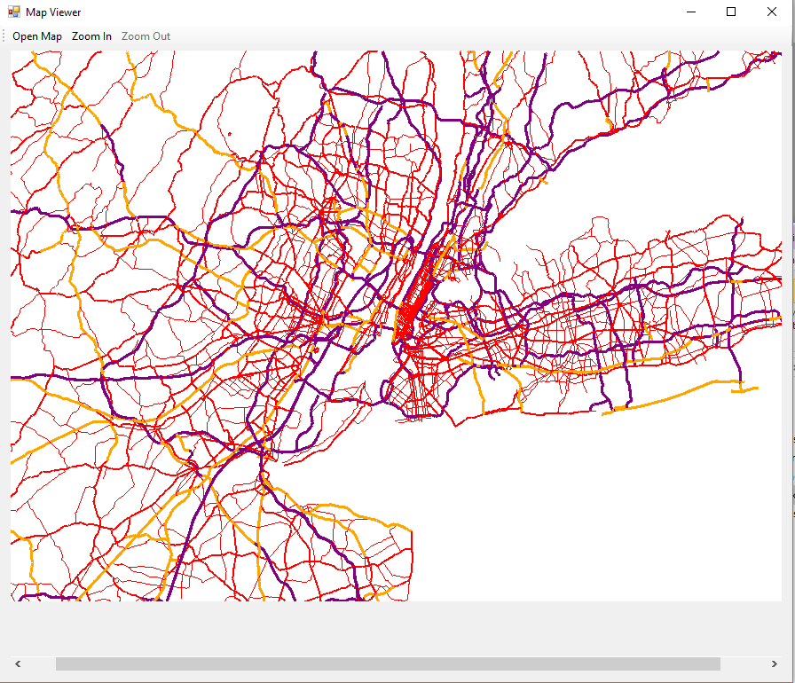
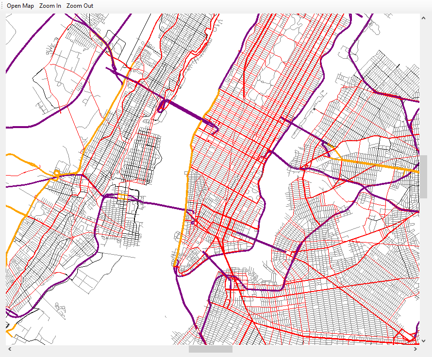

GPS Style Map Viewer
Class Project: CIS 300 Data Structures, Kansas State University
 This project was an experiment in using dynamically generated graphics and data storage using Quad Trees. The application reads in a text file of street data to define the region. This data is then seperated out into four planes, and seven levels of detail. The different levels of detail are determined automatically based on street density. The users can then zoom in on a particular region of the map and the application will rerender, displaying a different level of detail depending on whether the user zoomed in or out. The map of above reprents the streets of downtown Manhattan, NYC. The program was written within a Windows Form Application in C#.